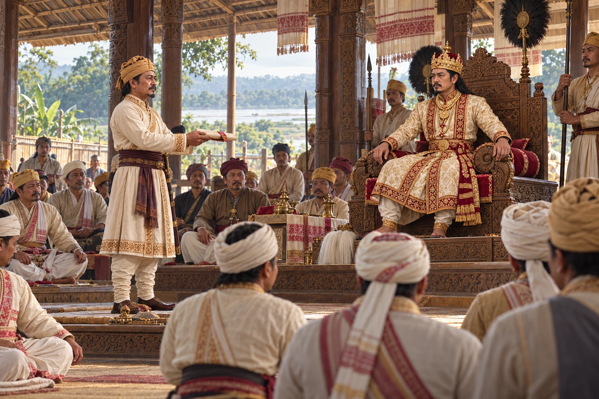

Kirti Chandra Borbarua Crowns Rajeswar Singha
1751 · The Tungkhungia kings

On Pramatta Singha's death, the Borbarua Kirti Chandra passes over the elder princes and places Rajeswar Singha on the throne, beginning two decades of his dominance at court.
Kirti Chandra presents an accession order at court.
Sources
People: Rajeswar Singha (Suremphaa), Kirti Chandra Borbarua (Gendhela), Pramatta Singha (Sunenphaa)
Open this scene in the interactive archive · Follow this event on MAP